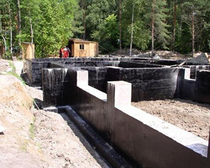
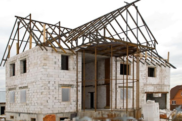
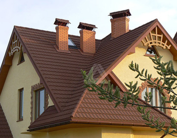

Начало строительстваЗадумав возвести свой частный жилой дом, для начала нужно определиться с его местонахождением и габаритами. Покупка земли под возведение здания - задача не для малосведущего, вот почему рекомендуется воспользоваться услугами квалифицированного работника - это может быть архитектор, топограф или конструктор, не важно. Но, следуя рекомендациям любого из них, с покупкой земли Вы гарантированно не промахнетесь. Не имеет смысла экономить на ценных рекомендациях этих профессионалов, так как они более грамотно, по сравнению с иными, смогут вычислить цену земли, которую Вам желают продать, и количество денежных затрат, которые начнутся за приобретением того или иного отрезка земли. Скажем, дешевый участок, стоящий в стороне от газопровода и водопровода, обернется для покупателя немалыми вложениями, отданными на планировку отвода жизненных благ к Вашему будущему коттеджу. Выбирать участок под строительство тоже нужно с консультациями отличного топографа, чтобы не выкидывать деньги на ветер за строительные материалы, которые могут быть отправлены на дополнительное укрепление фундамента коттеджа. В любом случае, консультация хорошего специалиста будет стоить гораздо дешевле , чем расходы на фундамент. Фундамент Фундамент для зданий минимальной этажности обычно проектируется ленточным из-за незначительных расстояний между несущими конструкциями. Ленточные фундаменты могут быть цельными (из монолитного бетона и железо - бетона) и составными (сборные детали из железобетона - подушка фундамента и блоки - стены). Сплошные ленточные фундаменты редко применяются из-за больших расходов материалов и высокого уровня трудоемкости (порядка 10-15% от всех затрат человеческого труда на возведение здания), оттого их употребляют только в крайних случаях, когда иные способы закладки фундаментов недопустимы. Составной фундамент собирается намного проще, да и пользы от него намного больше, скажем, при слабом и мягком грунте он позволит дому не допустить осадку. Стены Конструкция стен непосредственно зависит от спроектированного типа фундамента. Материалы же, применяемые для сооружения несущих стен и перегородок, могут различаться в зависимости от того, насколько они популярны в том и ином регионе, от цен на сами материалы и богатства страны на глину, древесину или иные материалы, а так же сейсмичности того района, где осуществляется строительство. Так, в районах с высокой сейсмичностью невозможна бутовая кладка, в подобных ситуациях используют многорядную систему перевязки кирпичом, который будет в силах выдержать сильные толчки и не даст постройке дать трещины или, что еще хуже, разрушиться. Кровля Выбор стропильной системы преимущественно осуществляется в пользу насланной, поскольку она довольно-таки проста, предполагает минимальные затраты человеческого труда и материала. Это принципиально важно, потому что цены на брус повышаются с каждым днем. Помимо дерева, для стропил не применяют других материалов по причине того, что дерево - самый дешевый материал по сравнению с железобетоном и металлом, да и тяжесть самих стропил из дерева куда ниже, чем если бы они были сделаны из иных материалов, а значит, нагрузка, испытываемая стенами, будет не такой существенной. После того, как стропильная система будет возведена, следует решить вопросы о термо-, паро- и влагоизоляции. Что это будут за материалы - лучше знать архитектору. Важно лишь, чтобы перерасхода материалов на утепление не случилось, а для этого архитектор должен был сделать исходный расчет параметров стен и оптимального объема утеплителя, из раздела строительной физики. Заниматься собственноручно вычислениями или слушать продавцов в магазинах, которые "точно знают", что Вам требуется тот или иной утеплитель, известной толщины, не стоит, так как рекомендация архитектора поможет Вам сэкономить не менее 400 евро. Далее следует укладка кровли. Это может быть черепица, шифер, жесть и другие материалы. Выбирать, конечно, Вам, но стоит помнить о том, что керамическая черепица имеет достаточно высокий удельный вес, картины из жести требуют покраски каждые 3-4 года, металлическая черепица стоит довольно недешево и требует укладки большего объема материала, так как каждый слой ее перекрывает наполовину предыдущий слой черепицы. Асбестоцементные листы (шифер) стоят дешевле черепицы, весят меньше, но их укладка требует определенных навыков и аккуратности, чтобы не поломать листы, которые довольно-таки плохо поддаются воздействию дрели и боятся любых ударов. |
|